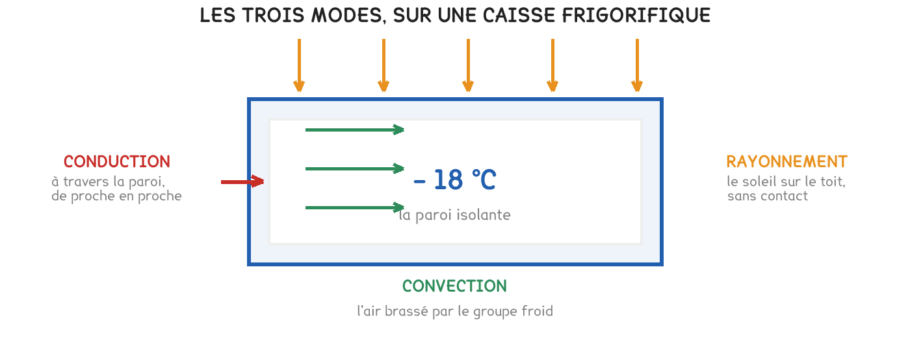

Tle Bac Pro CTRM
La chaleur passe d'un corps à l'autre par trois chemins, et toujours dans le même sens. Deux questions suffisent pour nommer le chemin, une règle suffit pour le sens.
3 exercices · 18 items d'entraînement · 1 repli · 2 figures
Savoirs travaillés
Avant de chercher par où la chaleur passe, il faut savoir dans quel sens. La règle n’a aucune exception.
La chaleur va toujours spontanément du corps le plus chaud vers le plus froid. Le froid ne circule pas : c’est un manque de chaleur. On ne dit jamais « le froid entre », on dit « la chaleur entre ».
| La situation | Le plus chaud | La chaleur… |
|---|---|---|
| une pizza à 60 °C dans une cuisine à 22 °C | la pizza | sort de la pizza |
| un yaourt à 4 °C dans la même cuisine | la cuisine | entre dans le yaourt |
| une caisse à − 18 °C sous 32 °C dehors | l’air extérieur | entre dans la caisse |
« Le froid entre » inverse le sens réel. Celui qui le dit cherche à boucher un passage du froid vers l’intérieur, et se trompe de côté. Une glacière ne « garde pas le froid » : elle empêche la chaleur d’entrer.

| Le mode | Comment la chaleur passe | Contact |
|---|---|---|
| Conduction | de proche en proche dans la matière, qui ne bouge pas | oui |
| Convection | emportée par un fluide qui se déplace, air ou liquide | oui |
| Rayonnement | par des ondes, même dans le vide | non |
Pour aller plus loin
Poste 1. La chaleur avance dans la tige, de proche en proche, jusqu’à la cire. Plus la punaise tombe tôt, mieux le matériau conduit : on classe par le temps, du plus court au plus long.
Poste 2. Le colorant ne chauffe rien : il sert de traceur, il rend visible le mouvement de l’eau. On regarde où il monte, où il redescend, et on se demande ce qui, dans le bécher, se déplace en emportant la chaleur.
Poste 3. Entre la lampe et le thermomètre, rien ne touche rien. On reprend alors la première des deux questions : sans contact, quel chemin reste-t-il ?
Exercice · THERM
Un fer chaud posé sur la planche chauffe la housse qui est dessous. Quel mode de transfert ?
Exercice · THERM
Au-dessus d’un bitume brûlant, l’air chauffé monte et fait trembler l’image du paysage. Quel mode de transfert ?
Exercice · THERM
Dans le dépôt, quelqu’un crie à un collègue qui laisse la porte de la chambre froide ouverte : « tu fais sortir le froid ! » Que faudrait-il dire, et pourquoi ?
On remplit chaque case, puis on vérifie la série entière d’un coup.
Série · THERM
Série · THERM
Série · THERM
| Du plus chaud vers le plus froid | toujours ; on ne dit jamais « le froid entre » |
| Sans contact : rayonnement | le seul mode qui traverse le vide |
| Avec contact : la matière bouge-t-elle ? | oui, convection ; non, conduction |
Cette page détaille la séance 1 de la séquence. Elle ne remplace pas le TP et ne donne aucun corrigé.